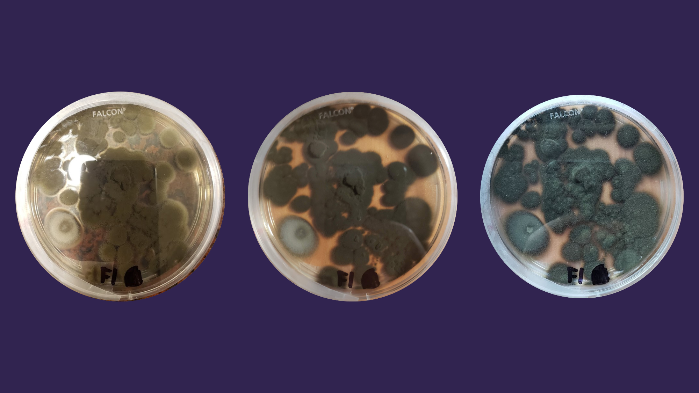
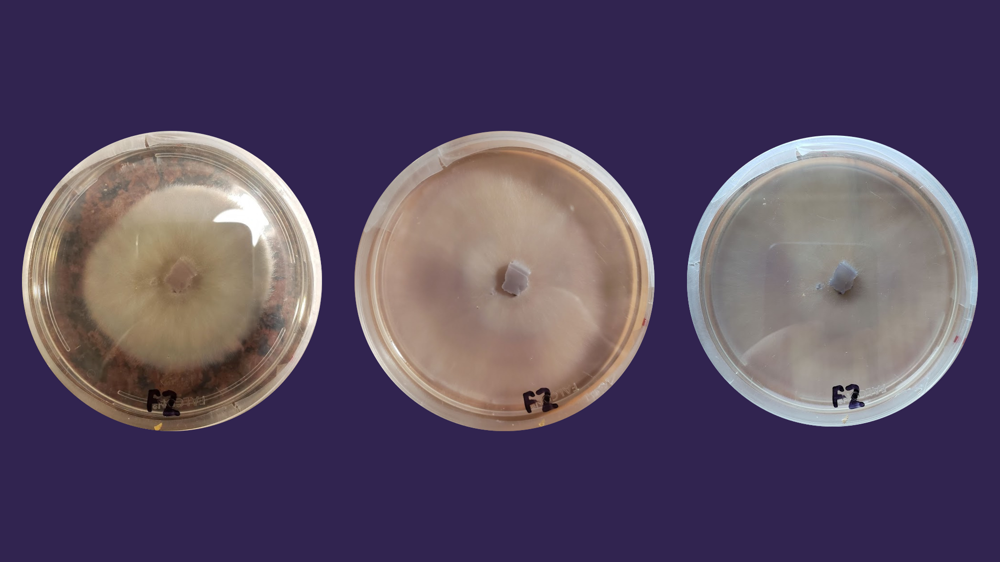
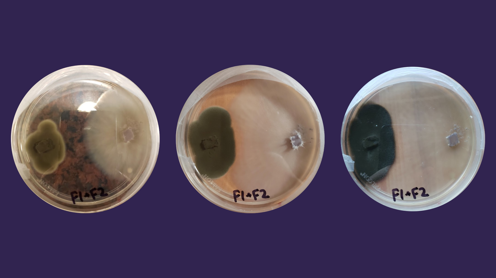

Experiment 4
Description
Similar to Experiment 3, this experiment tested how the microbe interacted with something else. However, instead of organic matter, I tested how this microbe interacts with a 2nd microbe in the petri dish. I observed 3 petri dishes, one with the pet microbe alone, one with the 2nd microbe alone, and one with both the microbes in it.
Hypothesis
The presence of the 2nd microbe will limit the growth of the pet microbe.
Results
Pet Microbe:
2nd Fungus:
Pet Microbe + 2nd Fungus:
Conclusion
My hypothesis was correct. We can see that the microbe grew much faster and over a larger area by itself than with the presence of the 2nd microbe. This also applies vice-versa. The 2nd microbe grew faster and over a larger area by itself. If I were to redo this experiment, I would see how the Microbe interacts with a bacteria instead of another fungus. From these results, we can see that the microbe must compete with other microbes for resources and real estate.